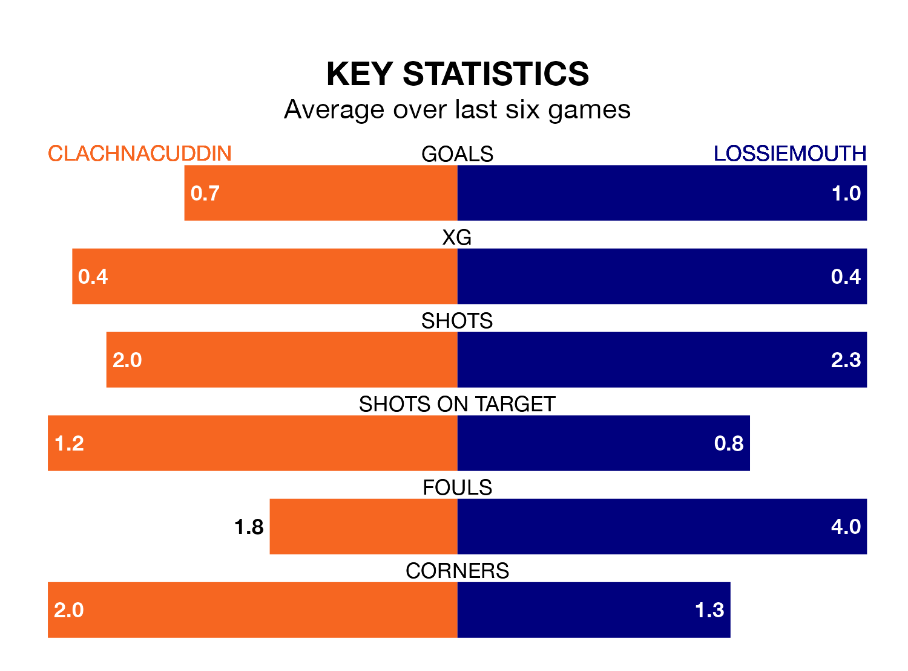

Lossiemouth travel to Grant Street Park looking to secure a first win in five Highland Football League games against Clachnacuddin on Saturday.
Lossiemouth have lost one and drawn three matches since they last earned three points – against Buckie Thistle on March 9.
They face a Clachnacuddin side who have won just one and lost three over that time.
Clachnacuddin are 17th in the table after 33 games, of which they have won four and drawn seven, earning 19 points.
Lossiemouth are three places ahead of the home team in 14th, with seven wins and eight draws putting them on 29 points.
In the last 10 years, Clachnacuddin and Lossiemouth have played each other on 13 occasions. Clachnacuddin won 10 of them, Lossiemouth two, and they drew once.
On average, Clachnacuddin scored 2.5 goals and Lossiemouth 1.5 in those matches.
Their last meeting was on November 25, when Lossiemouth won 5-2 at home.
With 36 goals in 33 games so far this season, the visitors are scoring at below the league average rate with 1.1 goals per game. And they are conceding more than average, letting in 62 goals at a rate of 1.9 per game.
Clachnacuddin are also below average scorers, with 1.3 goals per game, compared to a league average of 1.8. They have conceded 2.7 goals per game.
Clachnacuddin's last match was on Saturday, a 1-0 loss against Inverurie Loco Works.
Lossiemouth drew 0-0 with Turriff United last time out, also on Saturday.
Updated: 11:31 (UTC), 15/04/24